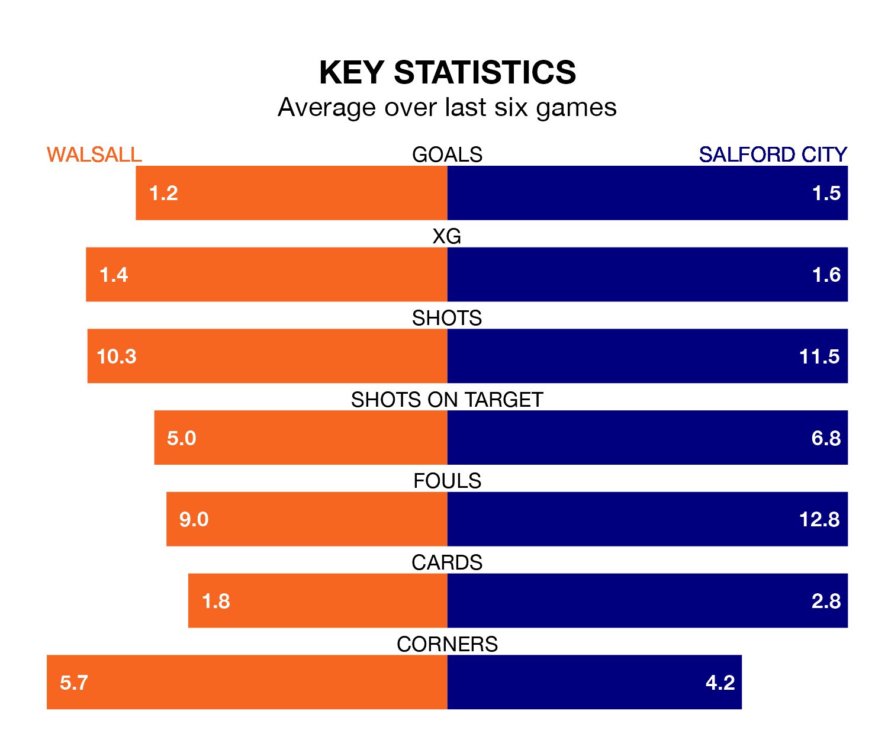

Walsall host Salford City on Monday at the Poundland Bescot Stadium in EFL League Two.
In their last league match, on Friday, Walsall lost to Milton Keynes Dons 5-0 away.
Salford also lost, 2-1 at home against Sutton United, with Ryan Watson scoring their goals.
In Matt Smith, Salford have one of the league's most on-form strikers so far this season. He has notched 23 goals in 41 appearances, to sit second in the scoring charts.
Walsall's top scorers, with 10 goals each, are Freddie Draper and Isaac Hutchinson.
In the last 10 years, Walsall and Salford have played each other on nine occasions. Walsall won three of them and Salford six.
On average, the Saddlers scored 1.0 goal and the Ammies 1.8 in those matches.
Their last meeting was on September 9, when Walsall won 2-1 away.
With 61 goals in 41 games so far this season, City are scoring at the league's average rate with 1.5 goals per game. And they are conceding more than average, letting in 75 goals at a rate of 1.8 per game.
The Saddlers are also average scorers, with 1.5 goals per game. They have also conceded 1.5 goals per game.
The Ammies are 20th in the table after 41 games, of which they have won 12 and drawn 11, earning 47 points.
The home team are nine places ahead of the visitors in 11th, with 15 wins and 11 draws putting them on 56 points.
Walsall are in mixed form in EFL League Two, with two wins and two draws from their last six games.
With two wins and a draw over that period, Salford's form is slightly worse – they have taken seven points from 18, compared to Walsall's eight.
Monday's match will be refereed by Daniel Middleton, who has taken charge of 10 EFL League Two games so far this season, issuing one red card and booking 39 players. He has awarded two penalties.
The last Salford game Middleton refereed was the 2-0 win away at Forest Green Rovers on August 5. He is yet to oversee a match featuring Walsall this season.
Updated: 10:31 (UTC), 31/03/24